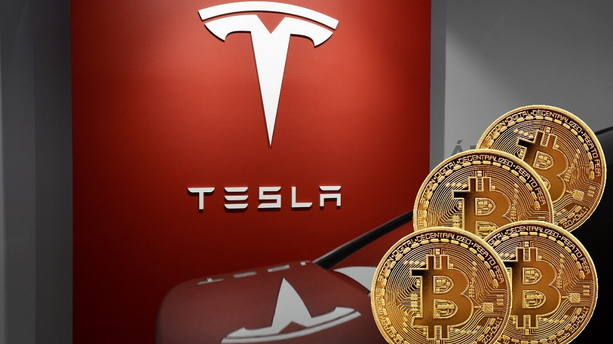

Tesla се отказва да приема биткойн
Пазарът на криптовалутите се оцвети в червено, след като Илън Мъск обяви в Twitter, че Tesla няма повече да приема биткойн като средство за разплащане. Мъск цитира екологичните опасения като основна причина и сподели, че Tesla е "притеснена от бързо нарастващото използване на изкопаеми горива за добив на биткойни, особено въглищата, които имат най-лошите емисии от всички горива". Веднага след туита на Мъск bitcoin се срина с над 10% до 46 хил. долара, след което възстанови до малко над 50 хиляди.
Обратът в стратегията на Tesla идва, след като през февруари обяви, че ще приема разплащания с най-голямата криптовалута. След края на първото тримесечие финансовият директор на компанията Зак Къркхорн сподели пред инвеститорите, че компанията е инвестирала над 1.5 млрд. долара, след като е продала в края на март 10% от инвестициите си в криптовалутата, което доведе до сериозен ръст в нетната печалба за първото тримесечие на Tesla. Елън Мъск добави, че Tesla не се отказва от технологията зад криптовалутите, но според изпълнителния директор на компанията иновацията не трябва да се случва за сметка на природата. Мъск добави, че фирмата ще "търси други криптовалути, които използват по-малко от 1% от енергията, изразходваната от биткойн". Иноваторът поясни и че Tesla няма да продава криповалутите, с които разполага, а ще ги задържи, докато добивът на биткойни не стане по-устойчив или зелен.